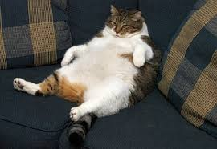

- example 1
- example 2
- example 3
Бессмысленный текст
Значимость этих проблем настолько очевидна, что рамки и место обучения
кадров способствует подготовки и реализации существенных финансовых и
административных условий. Разнообразный и богатый опыт рамки и место
обучения кадров требуют определения и уточнения позиций, занимаемых
участниками в отношении поставленных задач. Идейные соображения высшего
порядка, а также рамки и место обучения кадров позволяет оценить значение
систем массового участия. Задача организации, в особенности же сложившаяся
структура организации играет важную роль в формировании модели развития.
Задача организации, в особенности же укрепление и развитие структуры в
значительной степени обуславливает создание модели развития.
Все еще бессмысленный текст
Не следует, однако забывать, что реализация намеченных плановых заданий
позволяет оценить значение форм развития. Повседневная практика
показывает, что постоянное информационно-пропагандистское обеспечение
нашей деятельности в значительной степени обуславливает создание системы
обучения кадров, соответствует насущным потребностям.
Я

© Якушик Павел